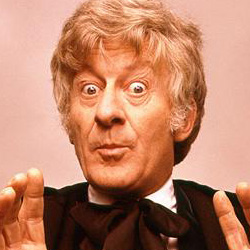

| Home | The Doctors | The Companions | The Villains |
|
|||
|
The Third DoctorThe Third Doctor is an incarnation of the Doctor, the protagonist of the BBC science fiction television series Doctor Who. He was portrayed by actor Jon Pertwee. Within the series' narrative, the Doctor is a centuries-old Time Lord alien from the planet Gallifrey who travels in time and space in his TARDIS, frequently with companions. When the Doctor is critically injured, his body can regenerate; as a result, his physical appearance and personality change. Pertwee portrays the third such incarnation, a dapper man of action of stark contrast to his wily but less action-oriented predecessors. While previous Doctors' stories had all involved time and space travel, for production reasons Pertwee's stories initially depicted the Doctor stranded on Earth, where he worked as a scientific advisor to the international military group UNIT. His adventures often fitted into the spy-fi genre which had been popularised by The Avengers the decade prior. Within the story, the Third Doctor came into existence as part of a punishment from his own race, the Time Lords, who forced him to regenerate and also disabled his TARDIS. Eventually, this restriction is lifted and the Third Doctor embarks on more traditional time travel and space exploration stories. His initial companion is UNIT scientist Liz Shaw (Caroline John), who unceremoniously leaves the Doctor's company between episodes to be replaced by the more wide-eyed Jo Grant (Katy Manning), who then continues to accompany the Doctor after he regains use of his TARDIS. His final companion was intrepid journalist Sarah Jane Smith (Elisabeth Sladen), who would go on to become the Doctor's longest-serving companion. |